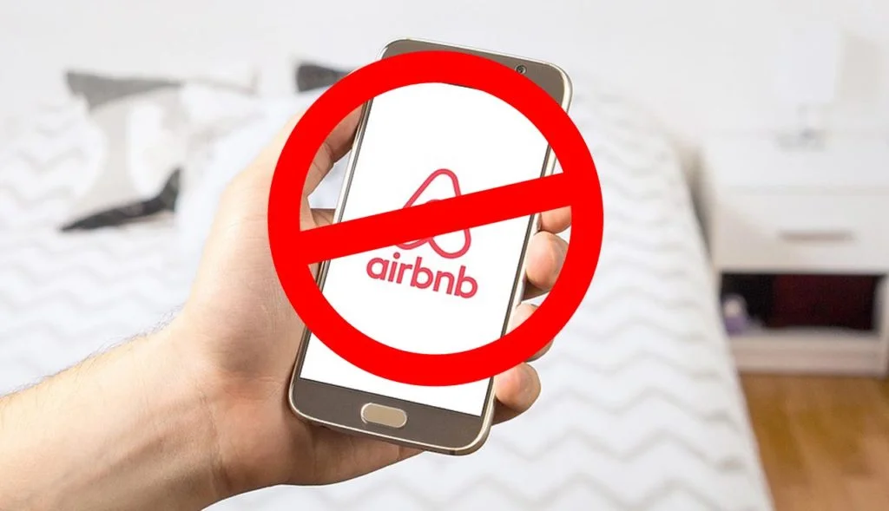
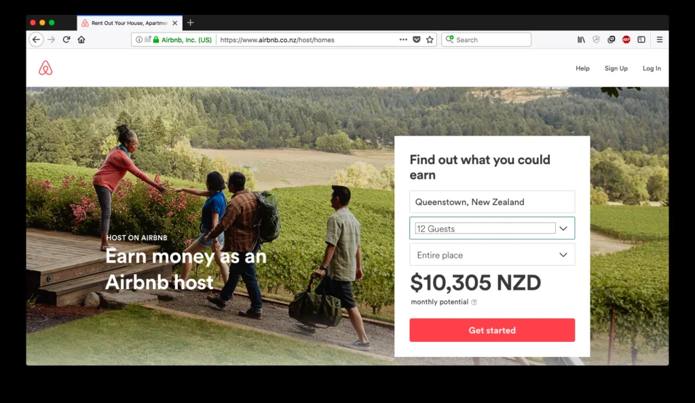

Archived Content (2019 Update): The information on this page reflects the proposed rules as at 2017 to 2018. It is retained for reference purposes only. For the current rules following the 2023 Environment Court decision, please see: Council's New Short-Term Visitor Accommodation Rules.
A Lot Has Changed
A lot changed since the last update on using your property for Visitor Accommodation (VA) such as Airbnb in the Queenstown-Lakes District. The Council published an updated guide to short-term accommodation that covered: the different classes of VA (registered holiday home versus homestay), whether resource consent was required, costs and benefits, how to register with the Council, the effect on rates and potential for development contributions, whether a building consent was required, and the requirements of a registered holiday home.
But those rules were about to change significantly.
The Airbnb Status Quo (Pre-2017)
Before the proposed changes, in many cases property owners did not require a resource consent to rent their house to fee-paying guests, provided the following conditions were met:
- Rented for no more than 90 days per year (allowing up to 30 individual lets)
- Minimum stay of 3 nights per let
- Registered with the Council
- Records of letting kept
- Property is a standalone dwelling or duplex (not an apartment)
A resource consent was required if any of these conditions were not met, including letting for more than 90 days per year. At that time, a resource consent of this kind, with a high-quality and professional application, was often fairly straightforward to achieve.
Check the Current Rules for Your Property
Enter your address and get a free complexity score for your specific site under the 2026 rules.
Why Were Hosts Finding Airbnb Attractive?

According to an Infometrics report prepared for QLDC in November 2017, the numbers were compelling:
- An estimated $74.5 million in total revenue was generated for Airbnb hosts in the 12 months to September 2017, including $12.9 million in the High Density Residential Zone.
- In the year to September 2017, hosts in Queenstown-Lakes earned on average $25,254 per entire house or unit, compared to $12,426 nationally.
- Those in the High Density Residential Zone earned $42,308 respectively.
- Queenstown-Lakes guests stayed the third longest out of 66 territorial authorities.
- Queenstown-Lakes hosts made the highest amount of money per property across all 66 Territorial Authorities.
Council's Proposed New Airbnb / Visitor Accommodation Rules
On 23 November 2017, the Council formally put out their proposed new rules for public submissions. The headline figures for the Low Density Residential and High Density Residential Zones (covering most urban residential areas in Queenstown, Wanaka, and Arrowtown) were:
Key Limits
- Not let for more than 28 days per year in total
- No more than 3 individual lets per year
- No minimum stay requirement for guests
- Less than 8 traffic movements per day; no heavy vehicles or buses
- Apartments would now be eligible for short-term accommodation (a change from the existing rules)
A resource consent was required if any of these limits were not met, and would be very difficult to obtain for properties in the Low Density Residential Zone.
The revenue impact: The average Airbnb stay in the District was 4.2 days. A cap of 3 individual lets per year at 4.2 days each would have meant most properties could only be let for approximately 12 days per year. The proposed rules would have dramatically and severely limited the revenue-generating potential of residential properties.
Getting a Resource Consent Before New Rules Applied
If you obtained a resource consent prior to any new rules coming into effect, you could generally continue to operate under that consent without issue in future, provided you complied with all conditions. A resource consent is also typically tied to the land, meaning any future owners of the property could also operate under it.
This is why a number of property owners applied for resource consent even when they were planning to sell their property in the future.
How Long Did Owners Have?
The process of submissions, hearings, independent decision-making, and appeals does take many months. The process of obtaining a resource consent also takes time, both in preparing the application and in Council processing. Those seriously considering a resource consent application were strongly recommended to progress this prior to 15 December 2018.
What to Do Now
Get in touch and send through an enquiry. We will take a look at your specific property and provide advice on the current rules, the impact of any proposed changes, the process to apply for resource consent, and any immediately obvious issues, for free and without obligation.
Frequently Asked Questions
QLDC's proposed rules, put out for public submissions on 23 November 2017, included: a maximum of 28 days per year total letting, no more than 3 individual lets per year, no minimum stay requirement for guests, less than 8 traffic movements per day with no heavy vehicles, and a new allowance for apartments to be used for short-term accommodation. A resource consent would be required for anything beyond these limits.
Before the proposed changes, property owners in many residential areas could rent their homes without resource consent provided they rented for no more than 90 days per year (up to 30 individual lets), required a minimum 3-night stay, were registered with the Council, kept records, and had a standalone dwelling or duplex (not an apartment). A resource consent was needed if any of these requirements were not met.
According to an Infometrics report prepared for QLDC in November 2017, an estimated $74.5 million in total revenue was generated for Airbnb hosts in the 12 months to September 2017, including $12.9 million in the High Density Residential Zone. Hosts in Queenstown-Lakes earned on average $25,254 per entire house or unit, compared to $12,426 nationally. Those in the High Density Residential Zone made $42,308 respectively.
Yes. If you obtained a resource consent prior to any new rules coming into effect, you could generally continue to operate under that consent in future without issue, provided you complied with all conditions. A resource consent is also typically tied to the land, meaning any future owners of the property could also operate under it. This prompted many property owners to apply for consent even if they were planning to sell.
Following public submissions and hearings, the Independent Hearings Panel provided their recommendations to QLDC. The process ultimately led to the 2023 Environment Court decision, which established the current rules for short-term accommodation across the District, including the 90-night registration pathway in most residential zones. See our updated short-term accommodation rules page for the current position.
The proposed restriction of a maximum of 3 individual lets per year was particularly significant. Given the average Airbnb stay in the District was 4.2 days, the practical effect would have been to limit most properties to only 12 days of short-term letting per year, dramatically reducing potential revenue for hosts.
Under the pre-2017 rules, apartments were not eligible for the non-consent letting allowance. The 2017 proposals would have allowed apartments for short-term accommodation. Under the current rules following the 2023 Environment Court decision, apartments in the Northlake and Shotover Country Zones still require a resource consent. In other zones, the unit-title complex rule applies: the 90-night allowance is shared across the whole complex, not each individual unit.
Following the 2023 Environment Court decision, properties in most residential zones can operate short-term rental for up to 90 nights per calendar year without a full resource consent, via a streamlined QLDC registration process. More than 90 nights requires a formal resource consent. In the Jacks Point Zone, the threshold is 42 nights per year. See our updated short-term accommodation rules page for the full zone-by-zone breakdown.
Check Your Property Now
Free complexity score. We'll tell you exactly what your site needs under the 2026 rules.